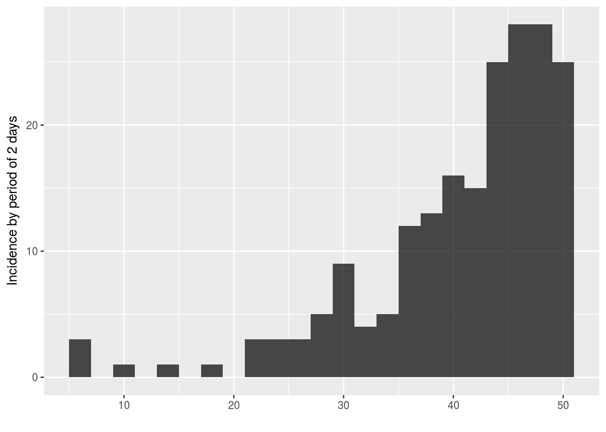
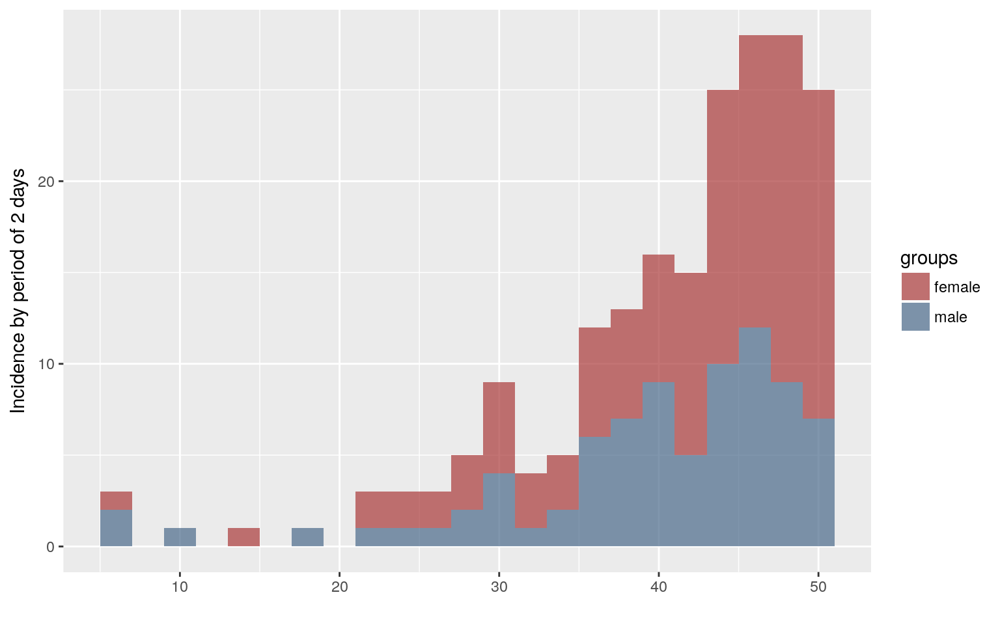

This vignette details the structure of incidence objects, as produced by the incidence function.
We generate a toy dataset of dates to examine the content of incidence objects.
library(incidence)
set.seed(1)
dat <- sample(1:50, 200, replace = TRUE, prob = 1 + exp(1:50 * 0.1))
sex <- sample(c("female", "male"), 200, replace = TRUE)The incidence by 48h period is computed as:
i <- incidence(dat, interval = 2)
i
#> <incidence object>
#> [200 cases from days 5 to 49]
#>
#> $counts: matrix with 23 rows and 1 columns
#> $n: 200 cases in total
#> $dates: 23 dates marking the left-side of bins
#> $interval: 2 days
#> $timespan: 45 days
plot(i)
We also compute incidence by gender:
i.sex <- incidence(dat, interval = 2, group = sex)
i.sex
#> <incidence object>
#> [200 cases from days 5 to 49]
#> [2 groups: female, male]
#>
#> $counts: matrix with 23 rows and 2 columns
#> $n: 200 cases in total
#> $dates: 23 dates marking the left-side of bins
#> $interval: 2 days
#> $timespan: 45 days
plot(i.sex)
The object i is a list with the class incidence:
class(i)
#> [1] "incidence"
is.list(i)
#> [1] TRUE
names(i)
#> [1] "dates" "counts" "timespan" "interval" "n"Items in i can be accessed using the same indexing as any lists:
## use name
head(i$dates)
#> [1] 5 7 9 11 13 15
## use numeric indexing
head(i[[2]])
#> [,1]
#> [1,] 3
#> [2,] 0
#> [3,] 1
#> [4,] 0
#> [5,] 1
#> [6,] 0In the following sections, we examine each of the components of the object.
$datesThe $dates component contains all the dates for which incidence have been computed, in the format of the input dataset (e.g. Date, numeric, integer).
class(i$dates)
#> [1] "integer"
class(dat)
#> [1] "integer"
i$dates
#> [1] 5 7 9 11 13 15 17 19 21 23 25 27 29 31 33 35 37 39 41 43 45 47 49The dates correspond to the lower bounds of the time intervals used as bins for the incidence. Bins always include the lower bound and exclude the upper bound. In the example provided above, this means that the first bin counts events that happened at day 5-6, the second bin counts events from 7-8, etc.
$countsThe $counts component contains the actual incidence, i.e. counts of events for the defined bins. It is a matrix of integers where rows correspond to time intervals, with one column for each group for which incidence is computed (a single, unamed column if no groups were provided). If groups were provided, columns are named after the groups. We illustrate the difference comparing the two objects i and i.sex:
class(i$counts)
#> [1] "matrix"
storage.mode(i$counts)
#> [1] "integer"
i$counts
#> [,1]
#> [1,] 3
#> [2,] 0
#> [3,] 1
#> [4,] 0
#> [5,] 1
#> [6,] 0
#> [7,] 1
#> [8,] 0
#> [9,] 3
#> [10,] 3
#> [11,] 3
#> [12,] 5
#> [13,] 9
#> [14,] 4
#> [15,] 5
#> [16,] 12
#> [17,] 13
#> [18,] 16
#> [19,] 15
#> [20,] 25
#> [21,] 28
#> [22,] 28
#> [23,] 25
i.sex$counts
#> female male
#> [1,] 1 2
#> [2,] 0 0
#> [3,] 0 1
#> [4,] 0 0
#> [5,] 1 0
#> [6,] 0 0
#> [7,] 0 1
#> [8,] 0 0
#> [9,] 2 1
#> [10,] 2 1
#> [11,] 2 1
#> [12,] 3 2
#> [13,] 5 4
#> [14,] 3 1
#> [15,] 3 2
#> [16,] 6 6
#> [17,] 6 7
#> [18,] 7 9
#> [19,] 10 5
#> [20,] 15 10
#> [21,] 16 12
#> [22,] 19 9
#> [23,] 18 7Note that a data.frame containing dates and counts can be obtained using as.data.frame:
## basic conversion
as.data.frame(i)
#> dates counts
#> 1 5 3
#> 2 7 0
#> 3 9 1
#> 4 11 0
#> 5 13 1
#> 6 15 0
#> 7 17 1
#> 8 19 0
#> 9 21 3
#> 10 23 3
#> 11 25 3
#> 12 27 5
#> 13 29 9
#> 14 31 4
#> 15 33 5
#> 16 35 12
#> 17 37 13
#> 18 39 16
#> 19 41 15
#> 20 43 25
#> 21 45 28
#> 22 47 28
#> 23 49 25
as.data.frame(i.sex)
#> dates female male
#> 1 5 1 2
#> 2 7 0 0
#> 3 9 0 1
#> 4 11 0 0
#> 5 13 1 0
#> 6 15 0 0
#> 7 17 0 1
#> 8 19 0 0
#> 9 21 2 1
#> 10 23 2 1
#> 11 25 2 1
#> 12 27 3 2
#> 13 29 5 4
#> 14 31 3 1
#> 15 33 3 2
#> 16 35 6 6
#> 17 37 6 7
#> 18 39 7 9
#> 19 41 10 5
#> 20 43 15 10
#> 21 45 16 12
#> 22 47 19 9
#> 23 49 18 7
## long format for ggplot2
as.data.frame(i.sex, long = TRUE)
#> dates counts groups
#> 1 5 1 female
#> 2 7 0 female
#> 3 9 0 female
#> 4 11 0 female
#> 5 13 1 female
#> 6 15 0 female
#> 7 17 0 female
#> 8 19 0 female
#> 9 21 2 female
#> 10 23 2 female
#> 11 25 2 female
#> 12 27 3 female
#> 13 29 5 female
#> 14 31 3 female
#> 15 33 3 female
#> 16 35 6 female
#> 17 37 6 female
#> 18 39 7 female
#> 19 41 10 female
#> 20 43 15 female
#> 21 45 16 female
#> 22 47 19 female
#> 23 49 18 female
#> 24 5 2 male
#> 25 7 0 male
#> 26 9 1 male
#> 27 11 0 male
#> 28 13 0 male
#> 29 15 0 male
#> 30 17 1 male
#> 31 19 0 male
#> 32 21 1 male
#> 33 23 1 male
#> 34 25 1 male
#> 35 27 2 male
#> 36 29 4 male
#> 37 31 1 male
#> 38 33 2 male
#> 39 35 6 male
#> 40 37 7 male
#> 41 39 9 male
#> 42 41 5 male
#> 43 43 10 male
#> 44 45 12 male
#> 45 47 9 male
#> 46 49 7 maleNote that incidence has an argument called na_as_group which is TRUE by default, which will pool all missing groups into a separate group, in which case it will be a separate column in $counts.
$timespanThe $timespan component stores the length of the time period covered by the object:
i$timespan
#> [1] 45
range(i$dates)
#> [1] 5 49
diff(range(i$dates)) + 1
#> [1] 45$intervalThe $interval component contains the length of the time interval for the bins:
i$interval
#> [1] 2
diff(i$dates)
#> [1] 2 2 2 2 2 2 2 2 2 2 2 2 2 2 2 2 2 2 2 2 2 2$nThe $n component stores the total number of events in the data:
i$n
#> [1] 200Note that to obtain the number of cases by groups, one can use:
apply(i.sex$counts, 2, sum)
#> female male
#> 119 81$isoweeksThe $isoweeks component is optional, and used to store iso weeks whenever they have been used. Iso weeks are used by default when weekly incidence is computed from dates (see argument iso_week in ?incidence).
library(outbreaks)
dat <- ebola.sim$linelist$date.of.onset
i.7 <- incidence(dat, 7L)
i.7
#> <incidence object>
#> [5888 cases from days 2014-04-07 to 2015-04-27]
#> [5888 cases from ISO weeks 2014-W15 to 2015-W18]
#>
#> $counts: matrix with 56 rows and 1 columns
#> $n: 5888 cases in total
#> $dates: 56 dates marking the left-side of bins
#> $interval: 7 days
#> $timespan: 386 days
i.7$isoweeks
#> [1] "2014-W15" "2014-W16" "2014-W17" "2014-W18" "2014-W19" "2014-W20"
#> [7] "2014-W21" "2014-W22" "2014-W23" "2014-W24" "2014-W25" "2014-W26"
#> [13] "2014-W27" "2014-W28" "2014-W29" "2014-W30" "2014-W31" "2014-W32"
#> [19] "2014-W33" "2014-W34" "2014-W35" "2014-W36" "2014-W37" "2014-W38"
#> [25] "2014-W39" "2014-W40" "2014-W41" "2014-W42" "2014-W43" "2014-W44"
#> [31] "2014-W45" "2014-W46" "2014-W47" "2014-W48" "2014-W49" "2014-W50"
#> [37] "2014-W51" "2014-W52" "2015-W01" "2015-W02" "2015-W03" "2015-W04"
#> [43] "2015-W05" "2015-W06" "2015-W07" "2015-W08" "2015-W09" "2015-W10"
#> [49] "2015-W11" "2015-W12" "2015-W13" "2015-W14" "2015-W15" "2015-W16"
#> [55] "2015-W17" "2015-W18"The correspondence between iso weeks and dates can be derived by comparing the respective items:
head(with(i.7, cbind.data.frame(dates, isoweeks)))
#> dates isoweeks
#> 1 2014-04-07 2014-W15
#> 2 2014-04-14 2014-W16
#> 3 2014-04-21 2014-W17
#> 4 2014-04-28 2014-W18
#> 5 2014-05-05 2014-W19
#> 6 2014-05-12 2014-W20Both dates and iso weeks are returned when converting an incidence object to data.frame:
head(as.data.frame(i.7))
#> dates isoweeks counts
#> 1 2014-04-07 2014-W15 1
#> 2 2014-04-14 2014-W16 1
#> 3 2014-04-21 2014-W17 5
#> 4 2014-04-28 2014-W18 4
#> 5 2014-05-05 2014-W19 12
#> 6 2014-05-12 2014-W20 18